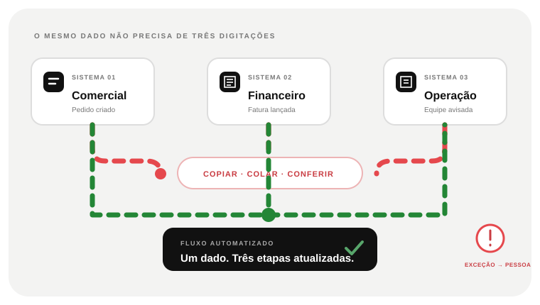

01 · A REPETIÇÃO
O dado entra. Alguém precisa digitar de novo?
Uma transferência manual recorrente consome atenção e abre espaço para divergência entre sistemas.


 SITES · SOFTWARE · SISTEMASDescrever um projeto
SITES · SOFTWARE · SISTEMASDescrever um projetoQUANDO DADOS VIAJAM ENTRE SISTEMAS PELAS MÃOS DA EQUIPE
Copiar dados, avisar outro setor e conferir se atualizou consome tempo e abre espaço para erro. A Girofy conecta ferramentas onde a regra é clara e deixa exceções visíveis para alguém decidir.

AUTOMAÇÃO PRECISA MANTER O CONTROLE HUMANO
Automação executa o previsível e sinaliza exceções.
QUANDO A EQUIPE REPETE A MESMA TRANSFERÊNCIA TODO DIA
O fluxo precisa conectar dados, regras e pessoas sem esconder o que exige decisão.
Uma transferência manual recorrente consome atenção e abre espaço para divergência entre sistemas.
Antes de conectar ferramentas, descubra quais dados movem o processo e quais casos precisam de análise humana.
Permissões, formatos, limites e qualidade dos dados definem o que pode ser integrado com segurança.
Uma boa automação trata o caminho previsto e encaminha o que sai da regra para a pessoa responsável.
Histórico, alertas e testes permitem identificar falhas e manter o processo confiável depois da entrega.
AUTOMAÇÃO E INTEGRAÇÃO DE SISTEMAS · O PROBLEMA VISÍVEL
A oportunidade aparece quando uma sequência é previsível, tem dados acessíveis e alguém consegue decidir o que fazer fora do padrão.
Pedidos, clientes ou documentos são transferidos manualmente porque sistemas não compartilham o mesmo registro.
A próxima pessoa só age quando recebe uma mensagem, mesmo que a regra para encaminhar o caso já seja conhecida.
Sem validação e registro, um dado ausente ou uma integração parada pode passar despercebida até alguém cobrar.
O TRABALHO QUE PRECISA SER FEITO
Integrações ligam ferramentas. Regras encaminham trabalho. Monitoramento sinaliza quando o fluxo não termina como esperado — essas três partes precisam ser desenhadas juntas.
Definir o que inicia o fluxo, qual dado é obrigatório e qual sistema deve refletir a mudança.
Registrar erro, criar uma forma de tentar novamente e alertar alguém quando o processo precisa de julgamento humano.
Acompanhar volume, tempo de espera e falhas sem afirmar economias que ainda não foram medidas.
DECIDIR SEM APEGO À TECNOLOGIA
Tarefas frequentes, baseadas em regras claras e com sistemas acessíveis são melhores candidatas do que decisões que mudam a cada caso.
DO PROBLEMA A UM ESCOPO DECIDÍVEL
Escolha um gatilho e um resultado verificável, confirme as permissões de integração e determine quem recebe alertas quando o fluxo parar.
Observamos de onde a informação vem, quem a copia, que regra se aplica e onde o resultado chega.
Validamos o fluxo esperado, dados ausentes, duplicados, atrasos e como a equipe recebe uma exceção.
Acompanhamos registros e alertas; mudanças de regra ficam explícitas para a operação.
PERGUNTAS DE QUEM ESTÁ AVALIANDO
Não necessariamente. Muitas automações removem transferência manual e deixam a pessoa responsável pelas exceções, aprovações ou decisões que pedem contexto.
Não. Depende de API, exportação, permissões e termos do fornecedor. A integração precisa ser tecnicamente possível e autorizada.
Não. Uma regra fixa costuma ser mais simples e previsível. IA pode fazer sentido quando o processo interpreta texto ambíguo e há uma forma segura de revisar o resultado.
UMA CONVERSA COMEÇA COM UM CASO REAL